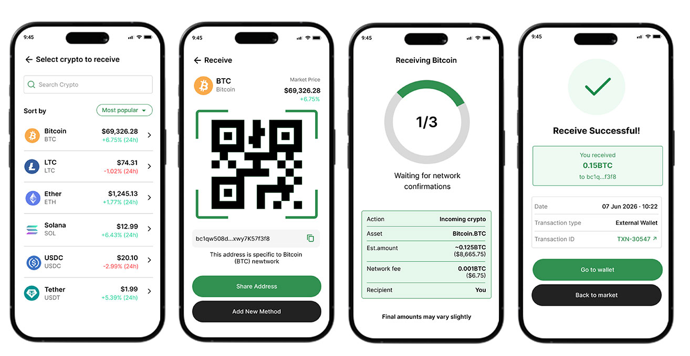
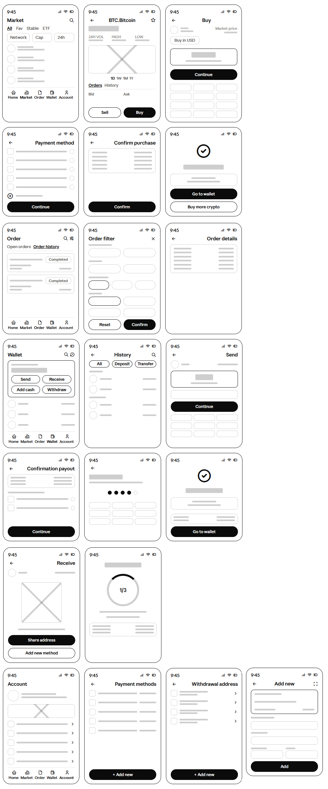
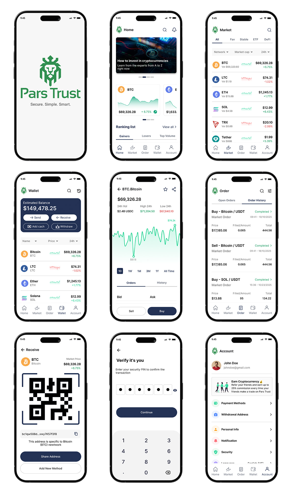

Pars Trust
Mobile Crypto Trading App
Timeline
Aug - Oct 2024
Tools
Figma, Figjam
Role
UI-UX Designer, Design System, Usability Testing

Project overview
Pars Trust is a mobile crypto trading app. There are already a lot of these apps on the market, and most of them try to win by adding more screens and more charts. I took the opposite approach: strip it down to three actions people actually do most — buy, sell, transfer — and make sure nothing gets in the way of doing them quickly and correctly.
Problem
A lot of crypto apps basically port a desktop trading terminal onto a phone screen. That's fine on a big monitor, but on mobile it just creates clutter, and clutter is dangerous when someone's trying to act fast in a moving market. The brief for Pars Trust was to keep the app simple and legible, without hiding information the user actually needs before they tap "confirm."
Research & User Behavior
Instead of building personas, I focused on how people actually behave when money is on the line:
- If the app takes more than 200ms to respond to a tap, people get anxious and tap again — sometimes placing the same order twice.
- Pinch-to-zoom charts, copied straight from desktop, are awkward with one thumb.
- Using the brand green for both buttons and profit/loss indicators made it hard to tell "this is navigation" from "this is market data."
Layout & Interaction Design
- Moved Buy, Sell, and Transfer into a bottom panel within thumb reach, so users aren't jumping across screens mid-trade.
- Replaced pinch-to-zoom with single-finger scrubbing plus haptic feedback, so people can read prices without their thumb covering the chart.
- Locked green (#27C687) and red (#FF4D4D) to price movement only — everything else is neutral, so the screen stays legible even when the market is moving fast.
Security and Transaction Safety
During testing we found a real problem in the wallet transfer flow: after entering a PIN, there was a delay before the app confirmed the transfer had gone through. With no feedback, 4 out of 5 testers (80%) tapped confirm a second time — which risked double-sending a transaction.
How we fixed it:
broke the receive flow into clear states (select crypto → QR/address → waiting for network confirmation → done), added a step-indicator, and showed transaction details (fee, amount, network) throughout so people could see their request was being processed instead of assuming it had failed.

Prototype
Started on paper, then moved to low-fi wireframes to settle the layout — locking the nav bar to the bottom, structuring asset cards so 24h % change is visible without drilling in, and simplifying onboarding to cut early drop-off. From there I built a high-fidelity interactive prototype covering the core flows: real-time price chart with touch-optimized time selectors, the unified buy/sell/transfer bar, PIN verification, and confirmation states like "Purchase Complete."
Low-Fidelity Wireframes:
I began with paper sketches and low-fi digital wireframes to establish layout priorities. To address user pain points, the onboarding process was streamlined to prevent early drop-offs, the navigation bar was locked to the bottom for thumb-accessibility, and asset cards were structured to surface key performance data (like 24h percentage changes) instantly without needing to drill down.

Interactive Prototype:
I built a high-fidelity interactive prototype to test core user navigation streams, specifically focusing on the transaction and wallet management flows. This phase introduced vital functional elements, such as a real-time price tracking chart with touch-optimized time selectors, a unified bottom action bar for instant access to buy/sell/transfer functions, a mandatory PIN-based security verification to ensure transaction trust, and system feedback screens (e.g., "Purchase Complete") to confirm actions gracefully and build long-term user confidence.

Usability Testing & Outcomes
Tested with 5 real investors, focused on stress scenarios — selling fast during a market drop, completing a payout on a weak connection.
- Confirmed the main breakage was the gap between PIN entry and transaction confirmation in the Wallet Send flow.
- 4 of 5 testers double-tapped confirm before the fix.
- Fixed it by disabling the button after the first tap, adding a progress indicator, and adding a transitional loading state.
- Duplicate transactions dropped to 0% after the fix, with no repeat taps in follow-up checks.
- The simplified Home and Market screens held up — testers could make fast, confident decisions at a glance, which was the original goal.